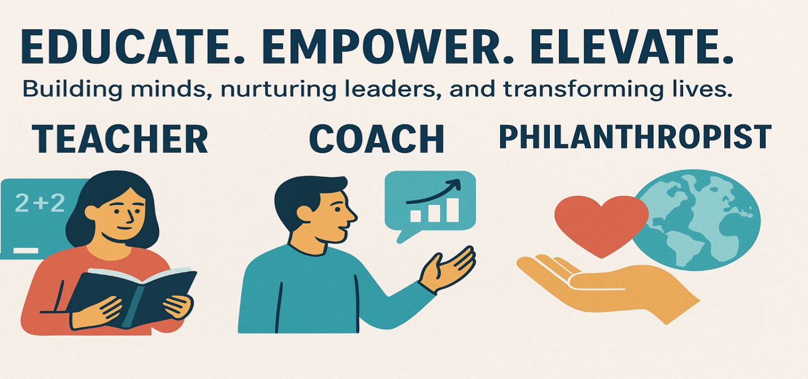

Ability Charities
EDUCATION
Southern Utah University
Master of Arts: Professional Studies in
BYU-Hawaii Campus
Bachelor of Arts: Political Science and Coaching
PROFESSIONAL DEVELOPMENT
Yale University
Certificate: Psychology and Wellbeing
University of Michigan
Certificate: MicroMasters in Social Work Policy, Methods, and Research
University of Pennsylvania
Certificate: Positive Psychology, Business Foundations, Business Analytics, and Entrepreneurship
KEY SKILLS
Leadership, Teaching, Coaching, Counseling, Communication, Interpersonal Skills, Business Analysis, Program Management, Economics & Government, Strategic Thinking, and Global Orientation